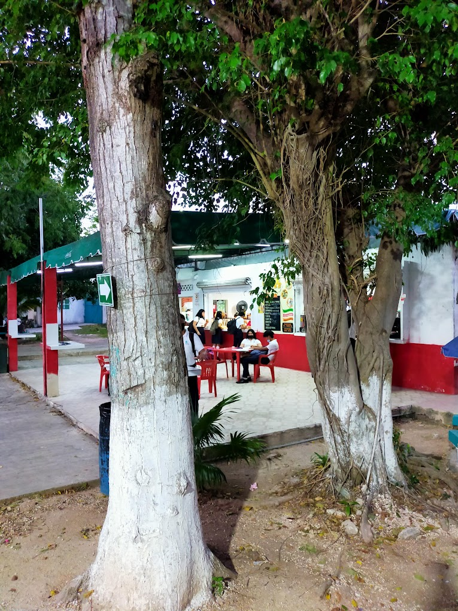
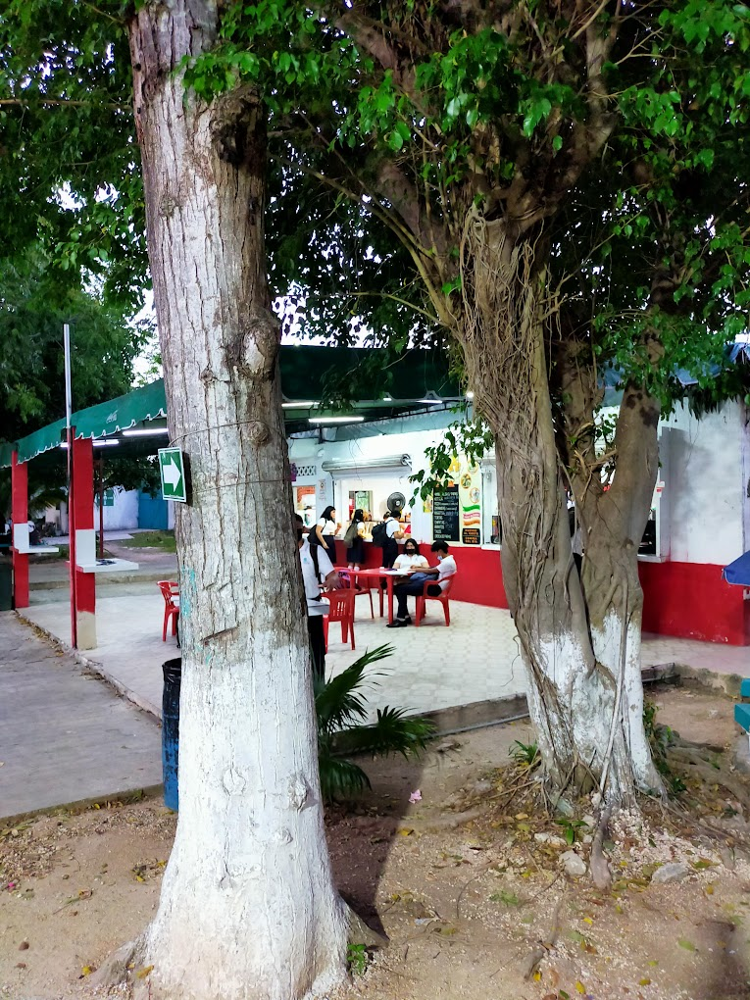
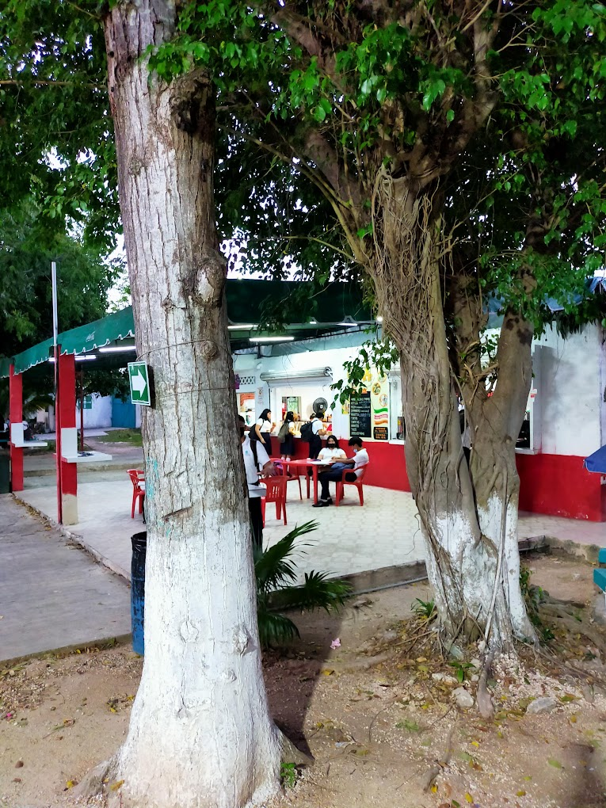

El Colegio de Bachilleres Plantel Cancun Dos cuenta con no una cafeteria, sino dos, las cuales, como he mencionado anteriormente cuentan con comidas y alimentos ideales elaborados unicamente para paladores refinados, y con precios ideales para un alumno promedio que asiste a escuela de gobierno. He aqui la descripicon de cada una de estas cafeterias y lo que ofrecen.
La cooperativa 1 se encuentra ubicada a lado de el laborotario de ingles, que en mi opinion de laboratorio no tiene nada, asi que mejor vamos a decirle el aula donde se hacen las practicas de ingles. Esta cafeteria no tiene tanto espacio para mesas como la cafeteria 2, de la cual hablaremos mas adelante. Entre la comida que ofrece esta cooperativa estan las empanadas, tortas, pizza, hot dogs, crepas, panuchos o salbutes la verdad no se cual es la diferencia entre esas dos cosas, y he decir que toda esa comida es malisima, pero no es que el Colegio de Bachilleres del Estado de Quintana Roo Plantel Cancun Dos no cuente con gente capacitada para preparar alimentos de ese tipo, si no es que creo que el Colegio de Bachilleres del Estado de Quintana Roo Plantel Cancun Dos no se molesta en comprar unos ingredientes de mejor calidad para la preparacion de la comida, pero eso no quita el hecho de que yo jamas gastaria mi dinero en comida de la escuela porque l verdad es que la comida de las escuelas nunca me ha inspirado confianza. Mostraria fotos de como es la cooperativa, pero como no consegui pues por eso no las muestro.
La cooperativa 2 esta ubicada entre los edificios donde se imparten las clases de literatura, historia y todo lo que tenga que ver con esas cosas aburridas y el edificio en donde esta el salon de informatica y el salon donde se imparte ecologia, biologia y eso. Esta cafeteria a diferencia de la cafeteria 1, es mas amplia y cuenta con mas espacio por lo que hay mas mesas, lo cual uno podria pensar que es mejor pero en mi opinion eso no esta tan bien ya que por lo tanto habra mas gente y odio los lugares con much gente asi que solo por eso dire que la cafeteria 1 es mejor, ya que es acaparada por la cafeteria 2, aunque la verdad las dos son malisimas. Ahora, lo que si he de reconocerle a esta cafeteria es que tienen mas variedad de alimentos, he aqui una lista de las cosas que ofrecen.
Ahora si, procedere a hablar de la comida. La verdad es que la comida de aca es una completa porqueria. Se que no se debe expresar asi de la comida, pero es que luego de haber degustado una "hamburguesa" si es que a esa cosa se le podia llamar asi, me quede con un terrible sabor de boca, pero lo que mas coraje me dio fue que gaste casi 50 pesos en esa cosa, lo cual me hizo sentirme completamente estafado, y es que lo que mas coraje da es el precio, si por casa de mi abuela venden hamburguesa al mismo precio y ni siquiera tienen comparacion. Para empezar, el pan que manejan es horrible, la miga del pan es horrible y se siente de super mala calidad. Pan super seco y ni que decir de la textura, es que como es posible que no puedan inventir en un pan de mejor calidad. Ni que decir de la carne, me atreveria a decir que manejan carne de perro, debido al horrible sabor que tiene la carne esa. Y ni que decir de los vegetales, para nada frescos y se sienten como si recien los hubieran sacado de la tierra. Y asi podria seguir criticando la comida de aca, y es que si la comida no costara mas de 20 pesos igual entenderia el motivo de la mala calidad de los alimentos, pero con esos exorbitantes precios que le ponen pues es evidente que me tendre que ver en la necesidad de criticar la comida de aca.

La verdad las dos son malisimas pero he de reconocer que la cooperativa 2 tiene mas variedad de alimentos y verdad la chava que la atiende esta bien bonita asi que en conclusion la 2 es mejor.